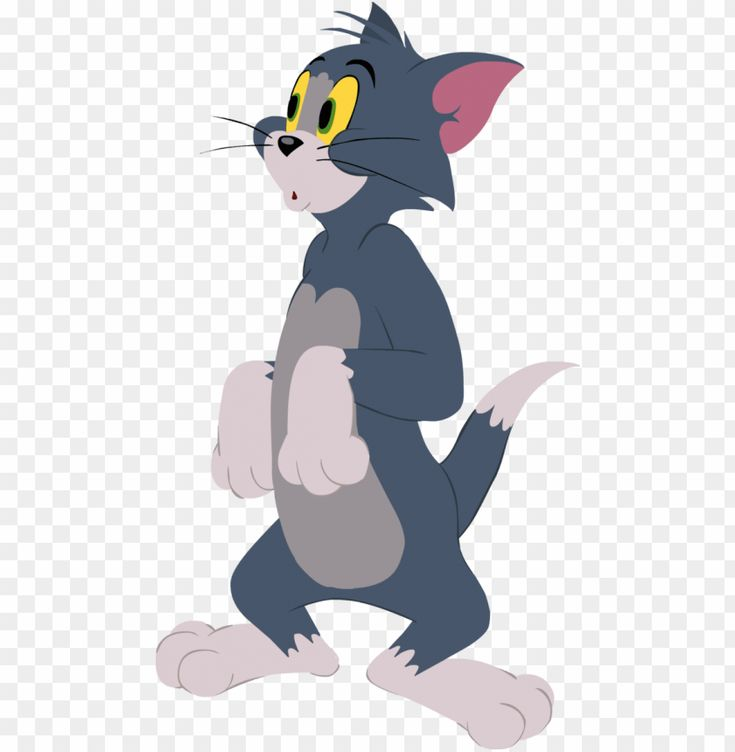

Cartoons
Phineas and Ferb
Phineas and Ferb, an animated comedy series, follows the adventures of Phineas Flynn and his English stepbrother, Ferb Fletcher, on their summer vacation. Each day, the boys and their friends take on some ambitious new project, sometimes to help someone in need, but often just to create something fun.
Main Casts


Tom and Jerry
Tom and Jerry is an American animated media franchise and series of comedy short films created in 1940 by William Hanna and Joseph Barbera. Best known for its 161 theatrical short films by Metro-Goldwyn-Mayer, the series centers on the rivalry between the titular characters of a cat named Tom and a mouse named Jerry.
Main Casts
